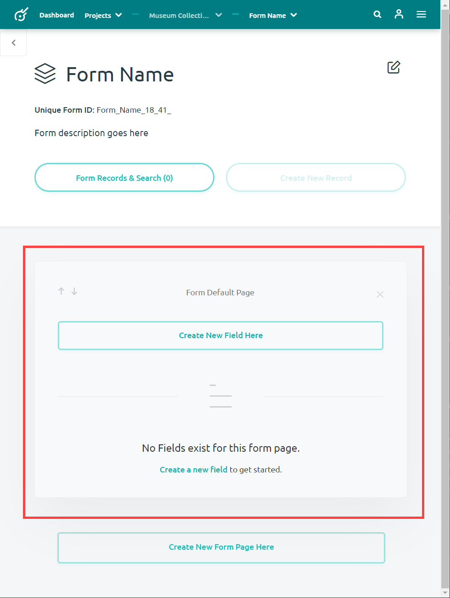
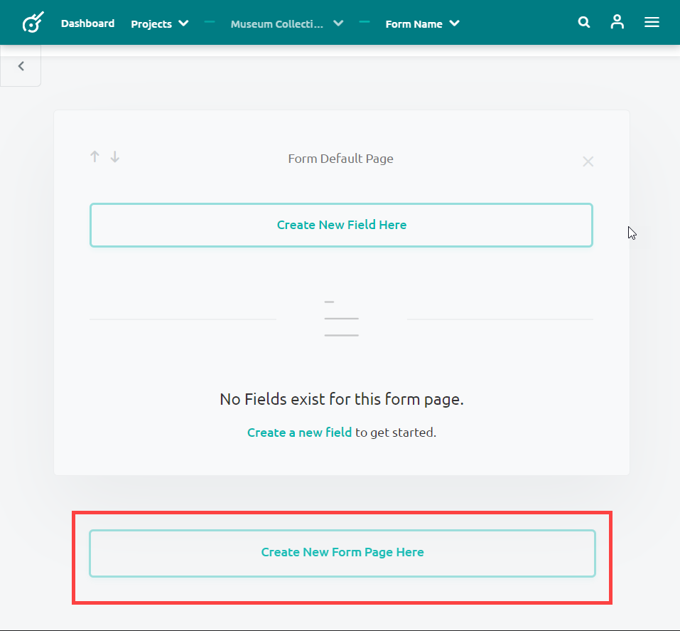
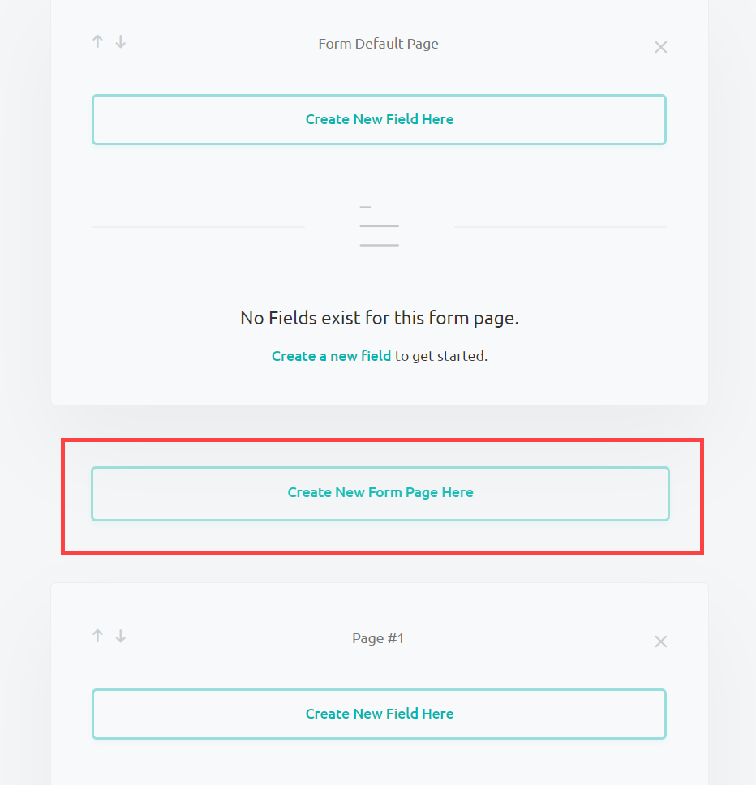
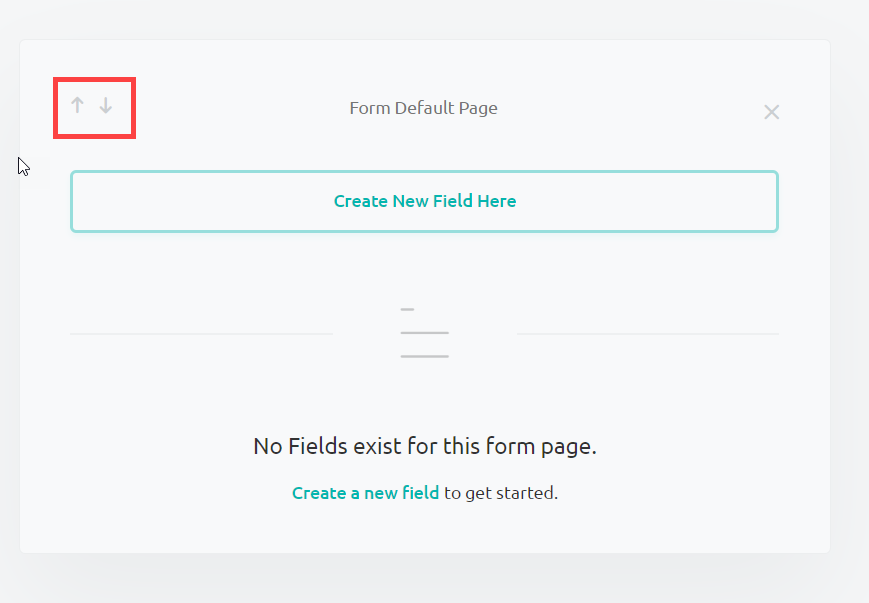
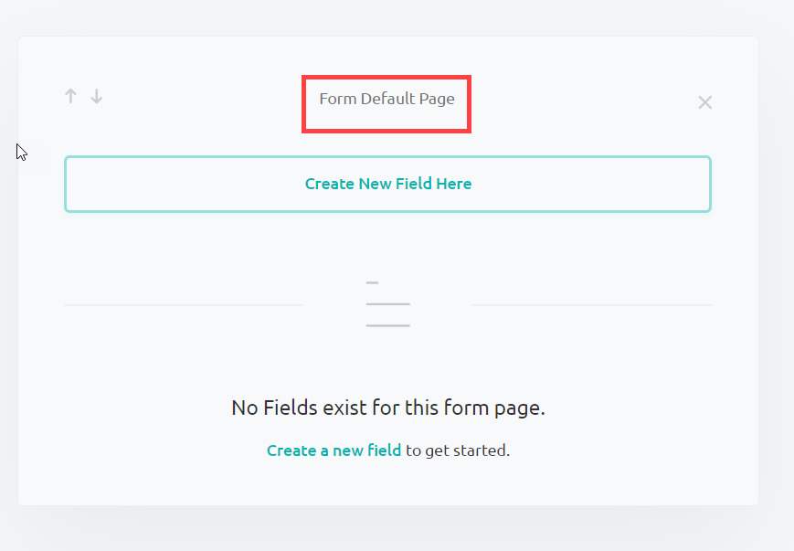
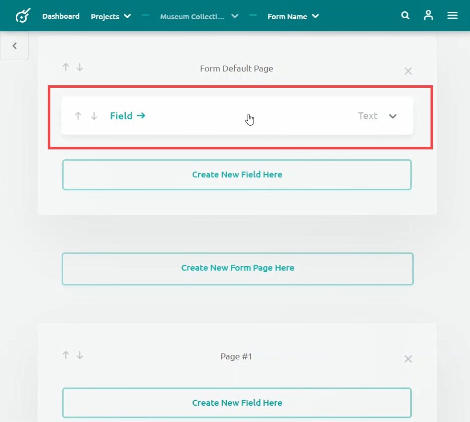
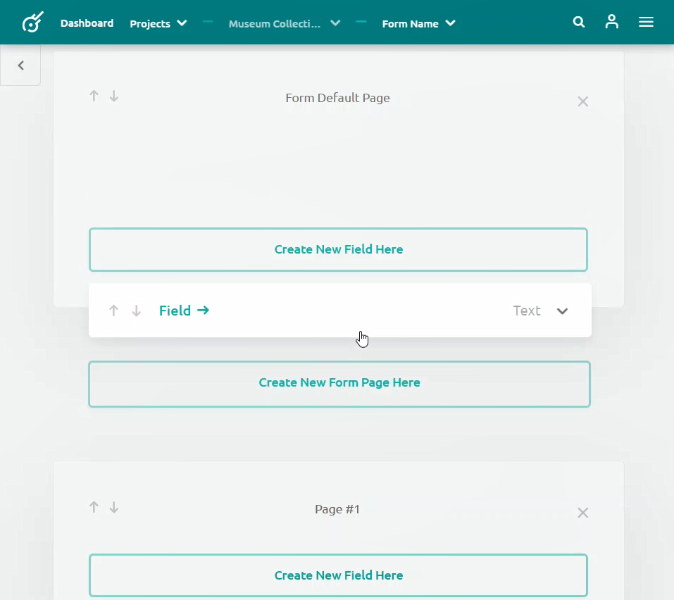
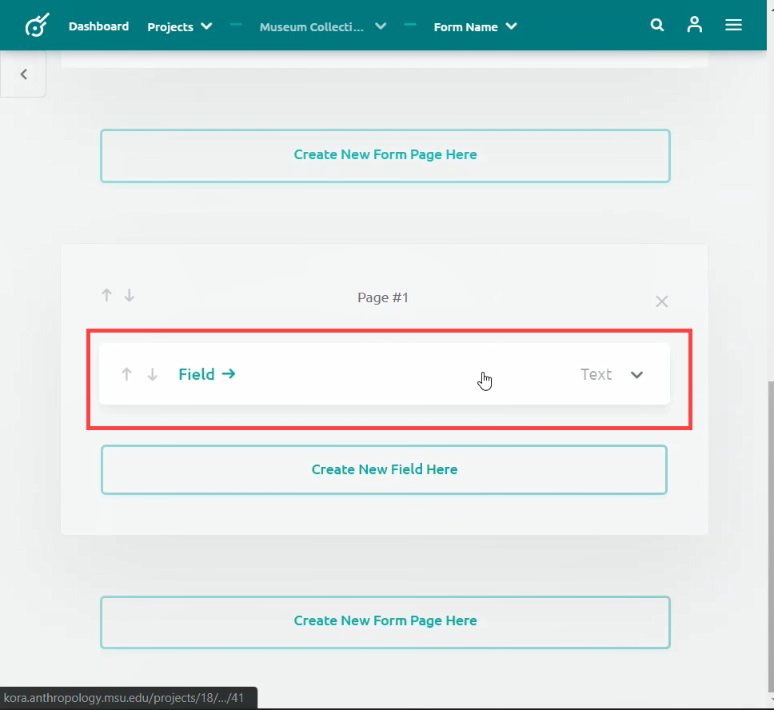

Creating a Multipage Form
A form allows you to organize fields in order to customize how your data is entered as a record. In some instances you may want to split your data entry into multiple sections. For instance, you may want information about the physical dimensions of an artifact entered into one section and its associated time period entered into another. Separating fields into multiple pages allows you to organize your form with these concepts in mind.
Creating multiple pages
In order to create multiple pages in a form you will need to create a form. This will initially provide you with a single page labeled (Your Form Name) Default Page.

This default page will initially contain no fields. Soon, however, you may find yourself creating a large number of fields in an attempt to capture as much data as possible. In many cases, it may be better for the readability of your form to separate these fields into multiple pages based on their content.
Follow these steps to create and organize new pages:
-
Below the default page, press the Create New Form Page Here button.

-
The first new page will appear below the default page, but you can add as many pages as you need for your data entry, including in between existing pages. A new Page will appear wherever you click to add a new page.

-
You may also reorganize where your pages appear by clicking on the navigation arrow in the top left corner of each page. Clicking on the top arrow will switch that page with the page above it, and the bottom arrow it will switch the selected page with the page below it.

-
You can rename pages by clicking on the title located at the top-center of the page, and typing in the new title.

Moving Fields Between Pages
You may create a new field within any page, or move a field from one page to another. You move fields between pages by clicking on the field and dragging it to the desired page:
-
Click on the field you want to move.

-
Drag the field with your mouse.

-
Place the field in the desired page.
